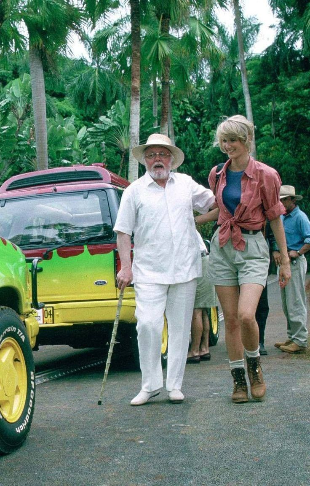

There was almost an amusement park called Jurassic Park. Just off the coast of Costa Rica, on the same island as Jurassic World, John Hammond founded the park. John Hammond was also the CEO of International Genetic Technologies, Inc. (InGen Inc for short). Jurassic Park was founded for the sole purpose of making profit and furthering genetic studies. Mr. Hammond payed no mind towards the dangers both his companies, Jurassic Park and InGen, were posing. Hammond showcased little to no interest in the genetic engineering field, he was only interested and driven by the profits these luxuries could have once he started to clone dinosaur DNA. John Hammond had discovered how to clone dinosaurs from blood samples preserved in insects stuck in amber, and he immediately started to see dollar signs. He pushed for the opening of Jurassic Park, but due to insurance reasons, he had to slow down the process because of possible safety hazards. Hammond had invited paleontologist Alan Grant and paleobotanist Ellie Sattler, along with a mathematician named Ian Malcolm who was brought on as an insurance consultant, to the island to get their feedback and approval of the animals and park in general. Hammond also brought his grandchildren, because he believed it would be a fun weekend getaway.
While the group visited the island, a serious problem occurred during a harsh tropical storm. The park's systems crashed, allowing the dinosaurs to do whatever they wanted. The people on the park were faced with a life threatening challenge. They had to fight for their lives against creatures they truly did not know how to control. That's the thing, you cannot control these animals. You can't domesticate the wild animals you see in zoos. Even though the zoo animals aren't as high-risk as the animals at Jurassic Park (and World), zoos still run into issues, and people have lost their lives. Both parks simply raise the stakes.
Children's lives were at risk. Would you want to risk putting your own children through such a situation? Every family who visits Jurassic World is risking serious consequences. What would you do if you were face to face with a Tyrannosaurus rex?